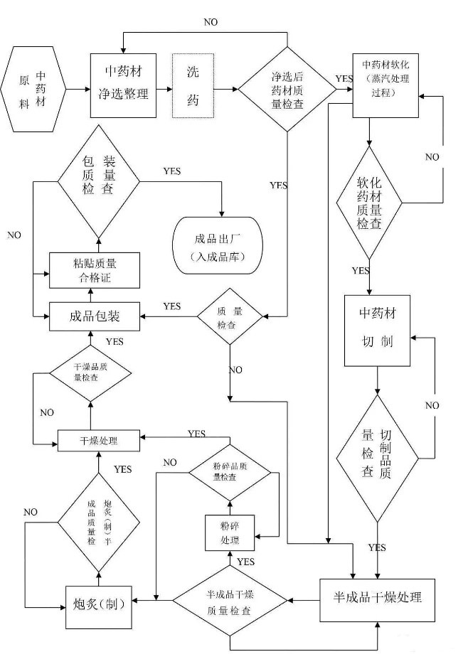
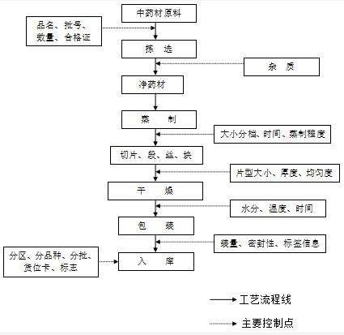
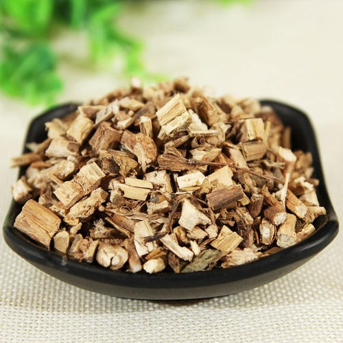
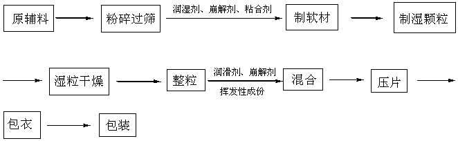
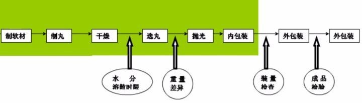
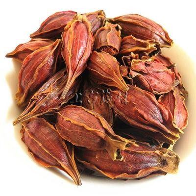

每周特价

中药材的技术工艺
中草药炮制样例示范
（1）相关介绍
制药工艺学:是药物研究、开发和生产中的中药组成部分，它是研究、设计和选择最安全、最经济、最简便和先进的药物工业生产途径和方法的一门]学科;也是研究、选择适宜的原料、中间体和辅料，确定优质、高产的制备路线、工艺原理和工业生产过程，实现制药工业生产过程最优化的一门]学科。

中药制药工艺学研究的内容:以中医药理论为指导，对方剂中药物进行方药分析,综合应用现代科学技术和方法，进行中药剂型选择、工艺路线设计、工艺技术条件筛选，使制备做到科学、合理、先进、可行，使研制的新药达到安全、有效、可控和稳定。
（2）中药材加工技术
1、提取工艺：
提取工艺作为复方中药制备的关键环节，直接影响中药制剂的质量。复方中药的传统提取方法包括煎煮法、渗漉法、回流提取法。常用介质为水和乙醇，常用设备为提取罐，过滤器，单双浓缩器等。工艺主要参数包括：温度、加水或量、提取次数、提取时间、浓缩真空度、浓缩温度等在实际生产过程中，应注意相关工艺参数的控制，保证变产品的有效性、安全性和稳定性。

2、制粒压片工艺：

常见的有湿法制粒压片，干法制粒压片，粉末直接压片。干法制粒：它是干粉经挤压、破碎、整粒，制成所需干颗粒的过程。使用的设备就是干法造粒机。湿法制粒是在药物粉末中加入液体粘合剂，靠粘合剂的架桥或粘结作用使粉末聚结在一起而制备颗粒的方法。干法制粒工艺比湿法制粒工艺少了制软材、湿法制颗粒、干燥和整粒几个步骤,可省去湿法制粒机、高效沸腾床、摇摆式颗粒机、高速整粒机等设备。因减少工序,污染减少,成品率得到提高,同时节约了能源。目前应用最广泛的是湿法制粒压片工艺，因为干法制粒压片要求药物对湿热敏感性要求高。

3、制丸工艺：
中药制丸一般有泛制法和塑制法。蜡丸、蜜丸一般采用塑制法。制丸前，首先要将药物混合均匀，加入润湿剂和粘合剂炼制成相应软材。然后根据正确使用制丸机的规程，来进行制丸工作。
制丸过程中的撒粉其主要作用是配套各类制丸机，对制出的药丸进行包粉加工，使药丸表面附着一层均匀的粉料避免相互挤压产生粘连，并使其顺利进入丸粒的抛光、筛分、干燥，打光，选丸工序。

4、配料工艺：
常见的液体剂型药又可分为粉针剂，糖浆剂，口服液（合剂），酊剂，乳剂等。在前期添加辅料，升温，搅拌，保沸等过程称统称为配料。关键控制点是：辅料加入时机，升温温度，保沸时间等。
（3）储存技术
1、中药材储存的重要性
为保障中药材的质量与药效中药的储存与管理非常重要，选择药库必须干燥通风,库面地面不潮湿(如我们药库放在最高楼层上)，必要时可以在地面.上放置生石灰吸潮收湿。要保持库房内外清洁。在中药材出库上应先进先出,按批号发货，避免中药材过有效期或变质而造成经济损失。当然在中药材储存与管理上更需要有领导的重视，成立中药材管理监督小组，定期进行监测促进。要不断创新，使中药材(饮片)的储存与管理更加科学化、制度化、合理化及长效化。
2、冷库储存的注意事项等
中药再放入中药材库保鲜储藏的时候，一定要注意分库存放，不同的药材要做好密封包装工作，避免药材之间的药性相互影响。对于一些挥发油比较多的中药材，如若库房的温度不适宜的，又会导致其散发香气或者是泛油，导致吸潮，霉变，产生虫害等现象。
